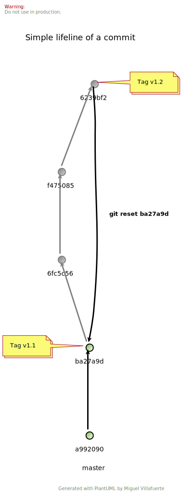

1. ¿Qué es git?
1.1. ¿Qué es un sistema de control de versiones?
Registra cambios realizados o estados en un archivo o conjunto de archivos a lo largo del tiempo, de modo que puedas volver a esos estados específicos cuando quieras.
1.2. Ventajas de usarlo
-
Podrás volver a una versión estable de tu proyecto
-
Podrás trabajar en una nueva funcionalidad en el mismo proyecto sin afectar a tu version estable
-
Podrás ver fecha hora y usuario que realizo el cambio
-
Podrás subir tu proyecto a un servidor remoto a través de https
2. Instalar
| Debes tener brew instalado |
Instalar git
$ brew install git3. Configurar
3.1. Configurar Committer
name
$ git config --global user.name "Pepe Pipo"email
$ git config --global user.email "pepepipo@provider.com"4. Usar
$ pwd
/Users/mvillafuertem$ mkdir -p projects/git-guide && cd projects/git-guide$ touch prueba.txt$ git init
Initialized empty Git repository in /Users/mvillafuertem/projects/git-guide/.git/$ git status
On branch master
No commits yet
Untracked files:
(use "git add <file>..." to include in what will be committed)
prueba.txt
nothing added to commit but untracked files present (use "git add" to track)$ while :; do clear; tree -a; sleep 1; done
.
├── .git
│ ├── HEAD
│ ├── config
│ ├── description
│ ├── hooks
│ │ ├── applypatch-msg.sample
│ │ ├── commit-msg.sample
│ │ ├── fsmonitor-watchman.sample
│ │ ├── post-update.sample
│ │ ├── pre-applypatch.sample
│ │ ├── pre-commit.sample
│ │ ├── pre-push.sample
│ │ ├── pre-rebase.sample
│ │ ├── pre-receive.sample
│ │ ├── prepare-commit-msg.sample
│ │ └── update.sample
│ ├── info
│ │ └── exclude
│ ├── objects
│ │ ├── info
│ │ └── pack
│ └── refs
│ ├── heads
│ └── tags
└── prueba.txt$ rm -rf .git/hooks$ echo "Pepe Pipo" | git hash-object -w --stdin
506a40ce53023d216946350e3169a87a4a637268$ tree -a
.
├── .git
│ ├── HEAD
│ ├── config
│ ├── description
│ ├── info
│ │ └── exclude
│ ├── objects
│ │ ├── 50
│ │ │ └── 6a40ce53023d216946350e3169a87a4a637268
│ │ ├── info
│ │ └── pack
│ └── refs
│ ├── heads
│ └── tags
└── prueba.txt$ git cat-file -p 506a40ce53023d216946350e3169a87a4a637268
Pepe Pipogit update-index --add --cacheinfo 100644 506a40ce53023d216946350e3169a87a4a637268 prueba.txt$ tree -a
.
├── .git
│ ├── HEAD
│ ├── config
│ ├── description
│ ├── index
│ ├── info
│ │ └── exclude
│ ├── objects
│ │ ├── 50
│ │ │ └── 6a40ce53023d216946350e3169a87a4a637268
│ │ ├── info
│ │ └── pack
│ └── refs
│ ├── heads
│ └── tags
└── prueba.txt$ git status
On branch master
No commits yet
Changes to be committed:
(use "git rm --cached <file>..." to unstage)
new file: prueba.txt
Changes not staged for commit:
(use "git add <file>..." to update what will be committed)
(use "git checkout -- <file>..." to discard changes in working directory)
modified: prueba.txt$ git write-tree
3ba0150ca8a18bf554e69606b5ce143d566c3956tree -a
.
├── .git
│ ├── HEAD
│ ├── config
│ ├── description
│ ├── index
│ ├── info
│ │ └── exclude
│ ├── objects
│ │ ├── 3b
│ │ │ └── a0150ca8a18bf554e69606b5ce143d566c3956
│ │ ├── 50
│ │ │ └── 6a40ce53023d216946350e3169a87a4a637268
│ │ ├── info
│ │ └── pack
│ └── refs
│ ├── heads
│ └── tags
└── prueba.txt$ git cat-file -p 3ba0150ca8a18bf554e69606b5ce143d566c3956
100644 blob 506a40ce53023d216946350e3169a87a4a637268 prueba.txt$ git commit-tree 3ba0150ca8a18bf554e69606b5ce143d566c3956 -m "Initial commit"
07e9dd2c2fb0f8e2e536968c42387bbaa9753046$ git update-ref refs/heads/master 07e9dd2c2fb0f8e2e536968c42387bbaa9753046$ git log
07e9dd2 Initial commit HEAD -> master Miguel Villafuerte 1 minutes ago$ git checkout HEAD -- prueba.txt5. Comandos básicos
5.1. git add
$ git add [<options>] [--] <pathspec>5.2. git checkout
$ git checkout [<options>] [<branch>] -- <file5.3. git commit
$ git commit [<options>] [--] <pathspec>5.4. git push
$ git push [<options>]5.5. git pull
$ git pull [<options>]5.6. git log
$ git log [<options>] [<revision-range>] [[--] <path>...]5.7. git branch
$ git branch [<options>] [-r | -a] [--merged | --no-merged]6. Comandos avanzados
7. Casos de Uso
